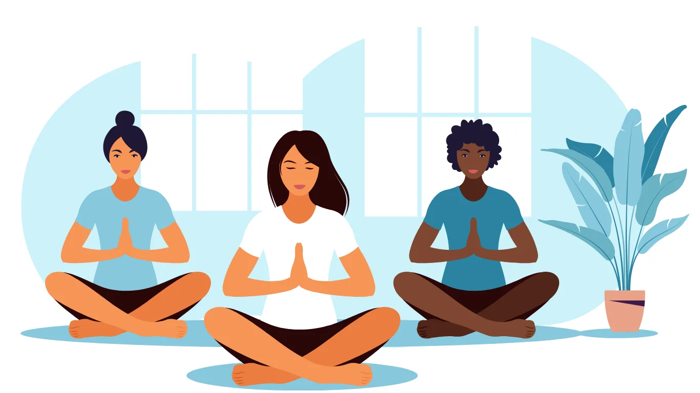

Mindfulness meditation is a practice that involves bringing your attention to the present moment, with an attitude of openness, curiosity, and acceptance. It is rooted in ancient Buddhist traditions but has been adapted for modern secular contexts. Here is a step-by-step guide to practicing mindfulness meditation:
1.
Find a Quiet Space:
Choose a quiet and comfortable place where you can sit undisturbed for the duration of your meditation. You can sit on a cushion, chair, or directly on the floor, whichever is most comfortable for you.
2. Assume a Comfortable Posture:
Sit with your back straight but not rigid, and your hands resting gently on your lap or knees. You can close your eyes or keep them slightly open with a soft gaze.
3. Focus on Your Breath:
Begin by bringing your attention to your breath. Notice the sensation of the breath as it enters and leaves your nostrils or the rise and fall of your abdomen. You can also choose to focus on a specific area where you feel the breath most prominently.
4. Be Present:
As you continue to focus on your breath, thoughts, sensations, and emotions may arise. Instead of trying to push them away or get caught up in them, simply observe them with a sense of curiosity and non-judgment. Acknowledge their presence and then gently guide your attention back to your breath.
5. Stay in the Moment:
Your mind may wander away from your breath repeatedly. This is normal. Each time you notice your mind wandering, gently bring it back to the present moment. You can use a mental note like "thinking" to label your thoughts and then return to focusing on your breath.
6. Practice Self-Compassion:
If you find yourself becoming frustrated or critical of your meditation practice, remember to be kind to yourself. Meditation is a skill that takes time and practice to develop, and it's okay to have moments of difficulty.
7. Practice Regularly:
To experience the full benefits of mindfulness meditation, it's helpful to practice regularly, even if it's just for a few minutes each day. Over time, you may notice greater awareness, calmness, and clarity in your daily life.